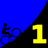
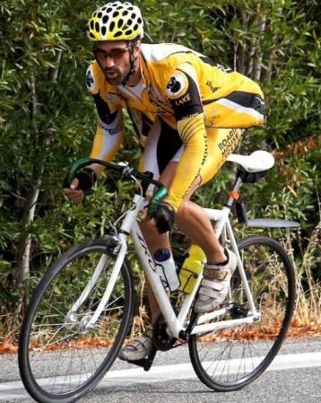

|  |
2008 Low-Key Hillclimbs Week 1 Results: Montebello 04 Oct 2008 |
|  |
| Ben Stern of Roaring Mouse pushes his 44/17 fixie up the rainswept slopes of Montebello Road(Luke Burton photo) |
Week 1 of the 2008 Low-Key Hillclimbs was a great success. The evening rains gave way to Low-Key-like sunshine at the start. This was the first rain we'd gotten in months, and as is usually the case with the first precipitation of the season, the roads were exceptionally slick. However, this didn't stop the leaders from setting a blistering pace on the climb. Following the two hybrid-electrics, was first to the top, followed by . However, by the time the riders reached the summit, the sun had given way to showers, growing heavier as time progressed. Leading home the women was a very wet followed by . Fortunately, the rain subsided for the descent, all the colder for the wet conditions. There were a few mishaps on the way, but nothing serious, fortunately.
Thanks to help from Brenda Brunner, Barry Burr, Luke Burton, Fred Butts, Juliana Chen, Cara Coburn, Gary Griffin, and Josh Hadley for making today's climb possible!median time = 21:13
pl # rider team category time mph fph score 1 244 Bill Bushnell Low-Key Hybrid 20:09 15.78 5777 105.29 2 417 Peter Cazalet Webcor/Alto Velo Hybrid 22:17 14.27 5224 95.21
median time = 34:27
pl # rider team category time mph fph score 1 39 Clark Foy San Jose Bike Club 40+ 27:03 11.76 4303 127.36 2 210 Tim Clark Red Octane 35+ 27:34 11.54 4222 124.97 3 43 Scott Frake Webcor/Alto Velo Bald 27:52 11.41 4177 123.62 4 97 Greg McQuaid San Jose Bike Club 35+ 27:54 11.40 4172 123.48 5 352 Geoff Drake Bike Trip 45+ 28:37 11.11 4068 120.38 6 17 Brian Edwards Hell Riders 25-29 28:40 11.09 4060 120.17 7 54 Justin Lucke Google Vegan 29:35 10.75 3935 116.45 8 282 Ammon Skidmore Roaring Mouse 30+ 29:40 10.72 3924 116.12 9 458 Craig Sanders X Men 40+ 29:44 10.70 3915 115.86 10 328 Mark Edwards Bike Trip 45+ 29:55 10.63 3891 115.15 11 315 Ken Gallardo Pen Velo/Kondra 30+ 30:52 10.30 3771 111.61 12 385 Todd Studenicke San Jose Bike Club 31:32 10.08 3691 109.25 13 506 Nils Tikkanen Bike Trip 3 31:32 10.08 3691 109.25 14 142 Rich Hill LGBRC 40+ 31:38 10.05 3680 108.90 15 20 James Porter Western Wheelers Out Of Shape Dads 31:41 10.04 3674 108.73 16 518 Carmelo Rios Fighting Bobas 5 31:44 10.02 3668 108.56 17 476 Johannes Smith 30+ 31:46 10.01 3664 108.45 18 427 Niall Murray Murray 5 31:52 9.98 3653 108.11 19 556 Alon Golan Webook.com 4 32:01 9.93 3636 107.60 20 67 Martin Hyland Western Wheelers 50+ 32:08 9.90 3622 107.21 21 500 Mike Donahue 40+ 32:18 9.85 3604 106.66 22 415 Sam Beal Chain Reaction 32:39 9.74 3565 105.51 23 35 Ron Brunner Low-Key Commuter 32:59 9.64 3529 104.45 24 444 Ernesto Castillo Chain Reaction 30+ 33:08 9.60 3513 103.97 25 443 Myles Cowherd 40+ 33:10 9.59 3510 103.87 26 50 Francis Cebedo RoadBikeReview 5 33:37 9.46 3463 102.48 27 343 Matt Werner Bike Trip 45+ 33:41 9.44 3456 102.28 28 283 Dan Talayco Two Wheel Tango GoatIbex 33:46 9.42 3447 102.02 29 307 Christian Paquet Doogie 50+ 33:49 9.40 3442 101.87 30 452 Bruce Gardner Monta Vista Velo 35+ 33:50 9.40 3440 101.82 31 514 Troy Folkner Western Wheelers 55+ 33:59 9.36 3425 101.37 32 421 Matt Wocasek Bike Trip 4 34:04 9.33 3417 101.13 33 532 Ben Stern Roaring Mouse Fixed Gear 34:11 9.30 3405 100.78 34 323 Scott Martin Bike Trip 50+ 34:12 9.30 3404 100.73 35 490 L Klein Jerry 40+ 34:27 9.23 3379 100.00 36 520 Liam Stewart Roaring Mouse 5 34:44 9.16 3351 99.18 37 441 Ilyas Elkin Nvidia 25-29 34:45 9.15 3350 99.14 38 412 John Pollard Bike Trip 45+ 34:52 9.12 3338 98.80 39 433 Jeff Lin Western Wheelers 35+ 34:57 9.10 3330 98.57 40 273 Calvin Do Skinny slow guys 35+ 35:15 9.02 3302 97.73 41 365 Gino Cetani Western Wheelers 35+ 35:24 8.98 3288 97.32 42 472 James Gillis next week 45+ 35:53 8.86 3244 96.01 43 454 Bob Montague Bike Trip 45+ 36:02 8.83 3230 95.61 44 508 Kevin Wong Team Spike 30+ 36:33 8.70 3185 94.25 45 272 Martin Hampton Pen Velo/Kondra 36:51 8.63 3159 93.49 46 550 Mike Bradley Fozz 40+ 37:00 8.59 3146 93.11 47 64 Keith Devlin Western Wheelers 60+ 37:23 8.51 3114 92.15 48 236 Paul Melville Doogie 55+ 37:52 8.40 3074 90.98 49 34 Stephen Fong Blubber Busters 5 38:00 8.37 3063 90.66 50 526 Jeff Deslich SVTV 45+ 38:02 8.36 3060 90.58 51 482 Ben Cota LGBRC 3 38:52 8.18 2995 88.64 52 229 Michael Czepiel Apple 20-24 39:29 8.05 2948 87.25 53 446 Ted Kelly 40+ 39:56 7.96 2915 86.27 54 496 Garry Chin Garry 40+ 40:23 7.87 2882 85.31 55 231 Murali Krishnan Commuter 35+ 40:28 7.86 2876 85.13 56 351 Jeff Swan Team Spike 40:31 7.85 2873 85.03 57 464 Eric Sorenson Bike Forums 30+ 41:14 7.71 2823 83.55 58 408 Richard Contreras 42:26 7.49 2743 81.19 59 524 Ron Dell'Aquila Western Wheelers 50+ 43:10 7.37 2697 79.81 60 488 Jon Richards SCCC 60+ 43:59 7.23 2646 78.33 61 336 Ed Noskowski Leafy Joe 45+ 44:13 7.19 2632 77.91 62 478 Patrick Callahan Western Wheelers 35+ 44:28 7.15 2618 77.47 63 484 Wolfgang Timm Western Wheelers 40+ 47:57 6.63 2428 71.85 64 49 Adam Tow Blubber Busters Infinity 48:23 6.57 2406 71.20 65 448 Tim Sutton Plus 3 Network Mountain Bike 49:14 6.46 2364 69.97 66 502 Lee Slone Sent Sovi 25-29 53:08 5.98 2191 64.84 67 808 Allen Erkman Team Scooby Single Speed 53:29 5.95 2176 64.41 68 470 Chris Mok Western Wheelers 50+ 64:36 4.92 1802 53.33 69 530 Zachary Cohen 71:42 4.44 1623 48.05
median time = 49:04
pl # rider team category time mph fph score 1 494 Susan Dahm 36:03 8.82 3229 136.13 2 270 Lucia Mokres LGBRC 3 37:07 8.57 3136 132.22 3 438 Helen Moore Western Wheelers 40+ 43:35 7.30 2671 112.60 4 5 Ingrid Erkman Team Scooby Single Speed 45:32 6.98 2556 107.78 5 249 Judith Alderman Road Divas 35+ 46:21 6.86 2511 105.88 6 305 Anne Findlay Triabetes/Pacific Bikes 30+ 47:02 6.76 2475 104.34 7 460 Katia Shukh Nvidia No Idea 47:29 6.70 2451 103.35 8 420 Janet LaFleur Road Divas Back Of The Pack 50:40 6.28 2297 96.86 9 544 Heather Bristol Road Divas 35+ 51:20 6.19 2268 95.60 10 538 Diana Garbarino slow 40+ 52:39 6.04 2211 93.21 11 27 Christine Holmes Low-Key 40+ 55:58 5.68 2080 87.69 12 111 Pat Parseghian Google 50+ 58:10 5.47 2001 84.37 13 512 Christina Vaughn Google 61:33 5.17 1891 79.73 14 246 Amy Tam Road Divas 64:06 4.96 1816 76.56
pl team score scoring 1 San Jose Bike Club 360.08 (Clark Foy, Greg McQuaid, Todd Studenicke) 2 Bike Trip 344.79 (Geoff Drake, Mark Edwards, Nils Tikkanen) 3 LGBRC 329.76 (Lucia Mokres, Rich Hill, Ben Cota) 4 Western Wheelers 328.54 (Helen Moore, James Porter, Martin Hyland) 5 Roaring Mouse 316.09 (Ammon Skidmore, Ben Stern, Liam Stewart) 6 Road Divas 298.34 (Judith Alderman, Janet LaFleur, Heather Bristol) 7 Low-Key 297.43 (Bill Bushnell, Ron Brunner, Christine Holmes) 8 Google 280.55 (Justin Lucke, Pat Parseghian, Christina Vaughn) 9 Webcor/Alto Velo 218.84 (Scott Frake, Peter Cazalet) 10 Chain Reaction 209.49 (Sam Beal, Ernesto Castillo) 11 Pen Velo/Kondra 205.10 (Ken Gallardo, Martin Hampton) 12 Nvidia 202.49 (Katia Shukh, Ilyas Elkin) 13 Doogie 192.85 (Christian Paquet, Paul Melville) 14 Team Spike 179.28 (Kevin Wong, Jeff Swan) 15 Team Scooby 172.19 (Ingrid Erkman, Allen Erkman) 16 Blubber Busters 161.86 (Stephen Fong, Adam Tow) 17 Red Octane 124.97 (Tim Clark) 18 Hell Riders 120.17 (Brian Edwards) 19 X Men 115.86 (Craig Sanders) 20 Fighting Bobas 108.56 (Carmelo Rios) 21 Murray 108.11 (Niall Murray) 22 Webook.com 107.60 (Alon Golan) 23 Triabetes/Pacific Bikes 104.34 (Anne Findlay) 24 RoadBikeReview 102.48 (Francis Cebedo) 25 Two Wheel Tango 102.02 (Dan Talayco) 26 Monta Vista Velo 101.82 (Bruce Gardner) 27 Jerry 100.00 (L Klein) 28 Skinny slow guys 97.73 (Calvin Do) 29 next week 96.01 (James Gillis) 30 slow 93.21 (Diana Garbarino) 31 Fozz 93.11 (Mike Bradley) 32 SVTV 90.58 (Jeff Deslich) 33 Apple 87.25 (Michael Czepiel) 34 Garry 85.31 (Garry Chin) 35 Commuter 85.13 (Murali Krishnan) 36 Bike Forums 83.55 (Eric Sorenson) 37 SCCC 78.33 (Jon Richards) 38 Leafy Joe 77.91 (Ed Noskowski) 39 Plus 3 Network 69.97 (Tim Sutton) 40 Sent Sovi 64.84 (Lee Slone)